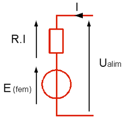
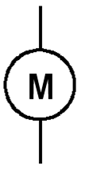
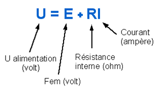

Schéma et fonctionnement
Le moteur se comporte comme une résistance en série avec un générateur de tension (fem : force électromotrice)
- I : courant consomme par le moteur (A)
- U : Tension d'alimentation du moteur (V)
- E : force électromotrice (V)
- R : résistance interne du bobinage (Ω).

Les équations caractéristiques du moteur sont les suivantes :
